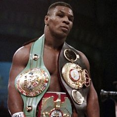
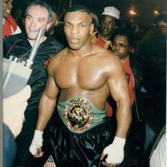
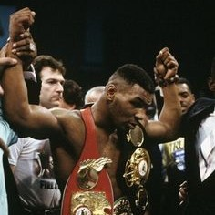

Títulos y Logros
Títulos en Peso Pesado:
- Campeón Mundial de Peso Pesado de la WBC (Consejo Mundial de Boxeo).
- Campeón Mundial de Peso Pesado de la WBA (Asociación Mundial de Boxeo).
- Campeón Mundial de Peso Pesado de la IBF (Federación Internacional de Boxeo).
- Campeón Mundial de Peso Pesado de la WBO (Organización Mundial de Boxeo).
Premios y Reconocimientos:
- Fue nombrado "Boxeador del Año" por la revista The Ring en 1986 y 1988.
- Recibió el premio ESPY al "Mejor Boxeador del Año" en varias ocasiones.
- Fue incluido en el Salón de la Fama del Boxeo Internacional en 2011.
Récords y Estadísticas:
- Tyson fue conocido por su impresionante récord de nocauts tempranos, acumulando una serie de 19 nocauts en el primer asalto de sus peleas.
- Tiene uno de los porcentajes de nocaut más altos en la historia del boxeo.
Logros Destacados:
- En 1986, se convirtió en el boxeador más joven en ganar un título de peso pesado, a los 20 años.
- Fue el primer boxeador en poseer todos los títulos mundiales de peso pesado reconocidos al mismo tiempo, conocidos como la "undisputed heavyweight champion", en 1988.



Su influencia trascendió el deporte, convirtiéndose en un ícono cultural con su imagen distintiva y tatuajes. Inspiró a una generación de jóvenes boxeadores y su legado perdura en el mundo del boxeo. A pesar de los desafíos personales y profesionales que enfrentó, Tyson sigue siendo respetado en el deporte, y su inclusión en el Salón de la Fama del Boxeo Internacional en 2011 confirma su estatus como una de las figuras más influyentes en la historia del boxeo. Su historia ha sido contada en películas, documentales y libros, asegurando que su impacto perdure en la memoria colectiva del boxeo y la cultura popular.